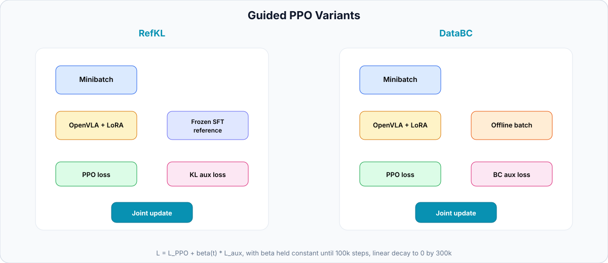
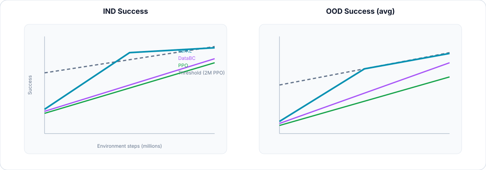

Abstract
Online reinforcement learning (RL) can substantially improve vision–language–action (VLA) policies, especially under out-of-distribution (OOD) shifts, but requires costly environment interaction. Offline supervised fine-tuning (SFT) is cheaper yet OOD-limited. We study hybrid offline–online training that regularizes PPO with offline supervision from either a frozen SFT reference policy (RefKL) or offline demonstration data (DataBC). On the RL4VLA benchmark with LoRA-based OpenVLA adaptation, guided methods preserve strong OOD capability while reaching performance close to standard RL with roughly half the online training budget. Reference-policy guidance is the most consistent variant, showing that offline supervision acts as an effective optimization prior rather than merely a better initialization.
Why Hybrid Offline–Online RL?
RL fine-tuning of OpenVLA LoRA adapters improves OOD behavior relative to SFT, but standard PPO needs on the order of 2M environment steps to reach strong in-distribution (IND) and OOD performance. Initializing PPO from an SFT adapter helps early on, yet adaptation remains slow when offline and online signals are not combined in the objective.
We ask whether offline supervision can be used not only for initialization, but as a structured training signal during RL optimization. Both guided variants add an auxiliary loss to PPO with a curriculum on the regularization weight β, allowing the policy to transition from guided learning to pure RL.
Method

Guided PPO variants. RefKL penalizes KL divergence to a frozen SFT reference on the RL minibatch. DataBC adds behavior cloning on offline demonstrations. Both use the same β schedule: constant until 100k steps, linear decay to zero by 300k, then pure PPO.
All methods fine-tune a zero-initialized LoRA adapter on top of frozen OpenVLA-warmup with the RL4VLA value-head modification. Training uses PutOnPlateInScene25Main-v3; evaluation covers 64 IND episodes and 960 OOD episodes across vision, language, and action shifts.
Results
At an equal budget of 1M environment steps, both guided variants outperform plain PPO. RefKL reaches IND 0.93 and average OOD 0.77, matching the final 2M-step PPO checkpoint (IND 0.92, OOD 0.77).
| Method | Steps | IND | OOD Act | OOD Lang | OOD Vis | OOD Avg |
|---|---|---|---|---|---|---|
| SFT | — | 0.82 | 0.46 | 0.60 | 0.74 | 0.62 |
| PPO | 1M | 0.75 | 0.67 | 0.62 | 0.65 | 0.64 |
| PPO SFT-init | 1M | 0.87 | 0.51 | 0.69 | 0.78 | 0.69 |
| PPO RefKL | 1M | 0.93 | 0.79 | 0.76 | 0.76 | 0.77 |
| PPO DataBC | 1M | 0.91 | 0.74 | 0.73 | 0.74 | 0.74 |
| PPO | 2M | 0.92 | 0.82 | 0.75 | 0.76 | 0.77 |
Main benchmark results on RL4VLA. RefKL at 1M steps matches 2M-step PPO on average OOD success while using half the online interaction budget.
Training Dynamics

Learning curves on RL4VLA. Guided variants reach higher IND and OOD success earlier than standard PPO. RefKL remains the most consistent guided method across training.
Optimization prior: offline guidance stabilizes early RL when the on-policy signal is still weak.
RefKL vs DataBC: reference-policy KL is a smoother regularizer than fixed-dataset BC.
Curriculum on β: strong initial guidance with decay outperforms a constant auxiliary weight.
No trade-off: faster training does not sacrifice OOD capability in this setting.
BibTeX
@misc{poyarkov2026offline,
title={Offline Supervision for Reinforcement Learning in {VLA} Models},
author={Poyarkov, Dmitriy and Staroverov, Aleksei and Panov, Aleksandr I.},
howpublished={ICML 2026 Workshop on Decision-Making from Offline Datasets to Online Adaptation: Black-Box Optimization to Reinforcement Learning},
year={2026}
}